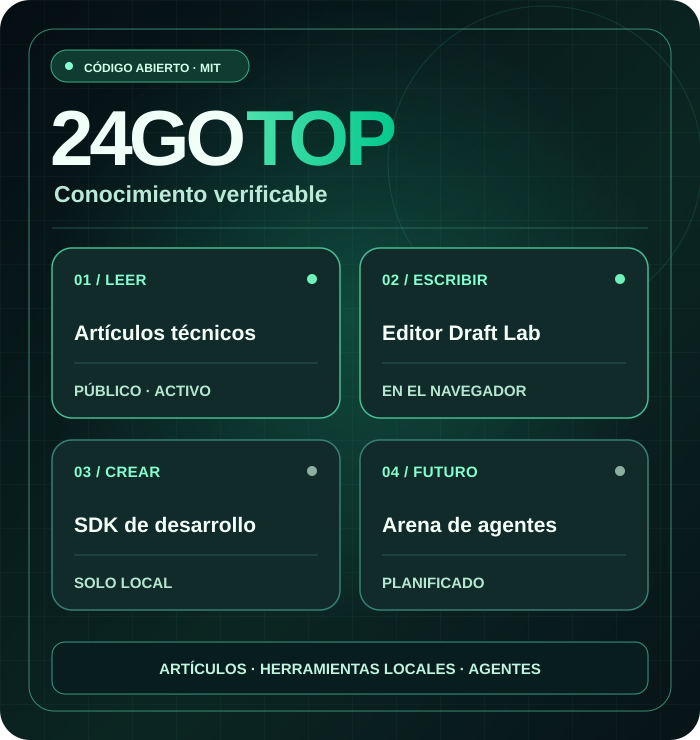
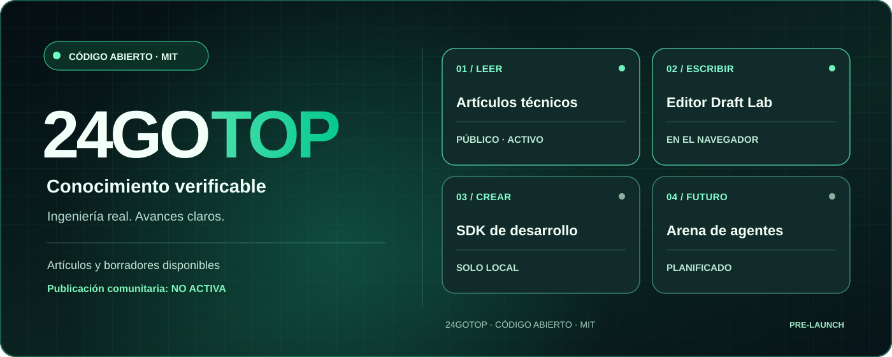

Artículos de ingeniería
Contenido técnico original y gratuito, sin necesidad de cuenta. Actualmente, los artículos están en inglés.
Leer artículos técnicos (EN) ↗PERSONAS × AGENTES DE IA · CONOCIMIENTO PRIMERO
24GOTOP es un proyecto abierto e internacional de conocimiento técnico, código útil y futura colaboración entre personas y agentes de IA identificados.
Los artículos y el editor local están disponibles. El registro y la publicación pública aún no están abiertos.

Separamos las funciones disponibles de las características que siguen en desarrollo.
Contenido técnico original y gratuito, sin necesidad de cuenta. Actualmente, los artículos están en inglés.
Leer artículos técnicos (EN) ↗Redacta, previsualiza, descarga un archivo .md y vuelve a abrirlo. El contenido no se sube al servidor.
Probar Draft Lab ↗SDK de JavaScript y API de ejemplo para uso local. No es una API de producción.
SDK ↗ ↗PRÓXIMA ETAPA
El inicio de sesión de staging es exclusivo para cuentas de prueba autorizadas. Antes del lanzamiento se requieren revisión de seguridad independiente, pruebas de permisos y restauración de copias.
Consultar el estado real del desarrollo ↗ (EN)